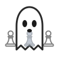

Cada turno robas una carta y ella decide por ti: cuántos movimientos haces o qué efecto se aplica.
Una carta por turno
Caótico
Rápido
Nuevo

Arsenal
Ajedrez de un movimiento por turno, pero vas guardando cartas en la mano y eliges el mejor momento para usarlas.
Mano de cartas
Estratégico
Ascensos
Reglas de Arsenal
Modo nuevo: si algo no funciona como esperas, cuéntalo en el buzón de sugerencias.
Objetivo
Se juega al ajedrez con un movimiento por turno, y gana quien captura el rey rival. Las cartas no se roban cada turno: se acumulan en tu mano y tú decides cuándo usarlas.
Robar cartas
Empiezas con 2 cartas del mazo y un Escudo.
Robas 1 carta cada 3 turnos tuyos.
Robas 1 carta cuando el rival te captura una pieza que no es peón.
Tu mano
Máximo 3 cartas (el Escudo inicial no cuenta). Si robas una cuarta, tienes que descartar una.
Tu rival ve cuántas cartas tienes, pero no cuáles. Las cartas descartadas sí las ve.
Carta repetida: si robas una carta igual a otra que ya tienes, eliges entre descartar la nueva o combinar las dos en una carta al azar de la rareza superior. Dos épicas iguales no se pueden combinar.
Usar cartas
Puedes usar 1 carta por turno, y nunca en tu primer turno.
Potenciadoras: se juegan antes de mover y no te quitan el movimiento.
De acción: sustituyen a tu movimiento.
Ninguna carta puede capturar o eliminar al rey directamente.
Ascenso
Cada carta que descartas te da puntos según su rareza: 1 común, 2 rara, 3 épica. Puedes descartar porque se te llena la mano o voluntariamente (cuenta como tu carta del turno). Con 5 puntos asciendes una pieza propia: . El rey no asciende.
Las cartas
Mazo compartido de 40 cartas: .
In 2 Chess · Destino
Buzón de sugerencias
¿Una idea para el juego, una carta nueva o algo que no funciona? Cuéntalo aquí. Es anónimo: no se guarda tu nombre ni tu correo.
0 / 1500
Pulsa para continuar
Manual
Variante de esta partida: . Se elige en el menú, al crear la partida (en online la elige quien crea la sala).
Objetivo
Se juega con las piezas y movimientos del ajedrez, pero gana quien captura el rey rival. Los colores se sortean al empezar cada partida, y empiezan blancas. No existe el jaque ni el jaque mate: puedes dejar tu rey expuesto, pero si el rival lo captura, pierdes.
Cómo es un turno
Pulsa Robar carta.
Si es un número, haces ese número de movimientos seguidos. Puedes mover la misma pieza varias veces.
Puedes capturar varias piezas en el mismo turno.
Si con un movimiento dejas al rey rival amenazado, tu turno termina aunque te queden movimientos. Así el rival siempre tiene un turno para defenderse.
Si capturas una pieza, tu turno termina aunque te queden movimientos.
Si es una carta especial, se aplica su efecto y ese es todo tu turno.
Para mover: pulsa una de tus piezas y después la casilla de destino. Los puntos marcan dónde puedes ir y los círculos rojos, qué puedes capturar. Si un rey se ilumina en rojo, el rival podría capturarlo con su próximo movimiento.
Las cartas
El mazo tiene 60 cartas. Cuando se acaba, se baraja el descarte.
Reglas de ajedrez que cambian
Enroque: como siempre (rey y torre sin mover, casillas libres), pero se puede enrocar aunque haya casillas atacadas.
Coronación: un peón que llega al final corona al momento y eliges la pieza.
Captura al paso: solo con tu primer movimiento del turno, justo después del avance doble del peón rival.
Ahogado: si te quedan movimientos y ninguna de tus piezas puede moverse, la partida acaba en tablas.
Las piezas convertidas o revividas cuentan como ya movidas: no pueden enrocar ni avanzar dos casillas.
Modos de juego
Online: uno pulsa "Crear partida online" y comparte el código de 6 letras; el otro lo escribe y pulsa "Unirse". Quien crea la sala no debe cerrar su pestaña.
Contra el bot: eliges la dificultad (Fácil o Normal) y juegas como Jugador 1.
En este ordenador: los dos jugadores se turnan en la misma pantalla.